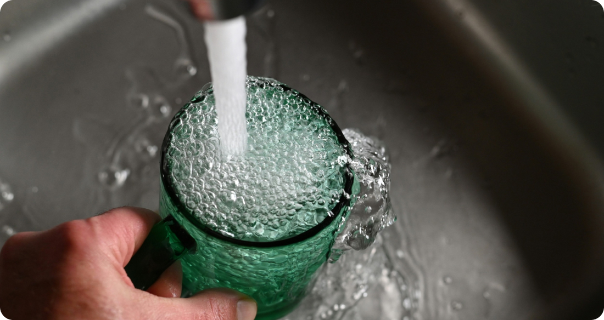

The Impact of Water Quality on Your Plumbing: What You Need to Know
Water is essential for life, and the quality of the water that flows through your plumbing system can have a profound impact on its functionality and longevity. From the minerals it contains to the presence of contaminants, understanding the factors that affect water quality is crucial for maintaining a healthy and efficient plumbing system.
One of the primary factors that influence water quality is the presence of minerals, such as calcium and magnesium, which can lead to hard water. While hard water is not harmful to your health, it can cause a variety of problems for your plumbing system. Over time, mineral deposits can accumulate inside pipes, faucets, and appliances, leading to reduced water flow, clogs, and corrosion. In addition, hard water can make it more difficult to lather soap and shampoo, leaving behind residue on your skin and hair.
Another concern with water quality is the presence of contaminants, such as bacteria, viruses, and chemicals. While municipal water treatment plants work to remove harmful contaminants from the water supply, some may still remain, particularly in older or poorly maintained plumbing systems. Contaminants can affect the taste, odor, and appearance of your water, as well as pose potential health risks if consumed or absorbed through the skin.
In addition to minerals and contaminants, the pH level of your water can also impact its quality. Water that is too acidic or too alkaline can corrode pipes and fixtures over time, leading to leaks, rust, and other damage. Monitoring and adjusting the pH level of your water can help prevent these issues and prolong the life of your plumbing system.
Fortunately, there are steps you can take to improve the quality of your water and protect your plumbing system. Installing a water filtration system can help remove contaminants and improve the taste and odor of your water. Water softeners can also help reduce the effects of hard water by removing minerals that cause scaling and buildup. Additionally, regular maintenance of your plumbing system, including flushing out pipes and inspecting for leaks, can help ensure the continued efficiency and reliability of your plumbing system.
In conclusion, water quality plays a critical role in the health and functionality of your plumbing system. By understanding the factors that affect water quality and taking proactive measures to address them, you can ensure that your plumbing system continues to provide clean, safe, and reliable water for years to come.